Painel macroeconômico
Painel macroeconômico em FastAPI com trinta e oito séries de cinco fontes públicas guardadas num DuckDB, cruzadas com o acervo de notícias já classificadas. Cada série derivada é validada contra a série oficial, e a síntese por tema cita apenas números calculados pelo banco.
- 38séries macroeconômicas em cinco temas
- 5fontes públicas, SGS, IBGE, FRED, CONAB e MAPA
- 6etapas idempotentes, cada uma executável sozinha
- 0,005ponto percentual de diferença máxima ao reproduzir o IPCA de 12 meses
Ingestão e validação
INGESTÃO

SÍNTESE

As séries cobrem preços, crédito, setor externo, atividade e contas públicas. As derivações são calculadas na ingestão, como o acumulado de doze meses, a variação interanual e a soma móvel, e cada uma é conferida contra a série oficial publicada sempre que ela existe. O IPCA acumulado reconstruído a partir da série mensal fica a no máximo cerca de 0,005 ponto percentual do oficial ao longo de 135 meses, e a mesma conferência vale para IGP-M, INCC e IPA.
O pipeline tem seis etapas idempotentes, cada uma executável sozinha, e o painel em FastAPI com Jinja2 não dispara coleta, apenas lê o que o pipeline gravou, o que mantém a página rápida e o custo previsível.
Síntese por tema
As estatísticas são calculadas no DuckDB e entregues prontas ao modelo, que narra a leitura de cada indicador em nível, direção e período em foco sem fazer contas. Cada afirmação do texto carrega o valor e a data de onde saiu, rastreáveis até a série e o período, e o gráfico de cada indicador acompanha a leitura.
A síntese de cada tema cruza essa leitura com as notícias classificadas que tratam do mesmo assunto. Como cada dado costuma ser divulgado semanas depois do período a que se refere e as notícias o comentam na data da divulgação, a junção usa o período de referência da série e janelas de último mês e última semana sobre a data de publicação, para que cada número apareça ao lado das notícias que de fato o discutem.
Python · DuckDB · FastAPI · Jinja2 · Groq · Docker